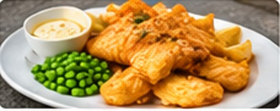
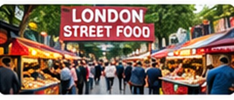
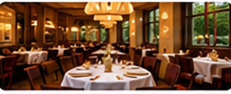

Food and Restaurants in London
London offers British food and meals from many different countries.
Traditional British Food

Fish and chips is a well-known British meal. You can also try a Sunday roast in some pubs and restaurants.
Street Food

Markets such as Borough Market have different foods and snacks to try.
Restaurants

London has many types of restaurants, including Indian, Italian and Chinese restaurants.
Food Tips
Check the menu and prices before eating. Tell staff if you have any food allergies.